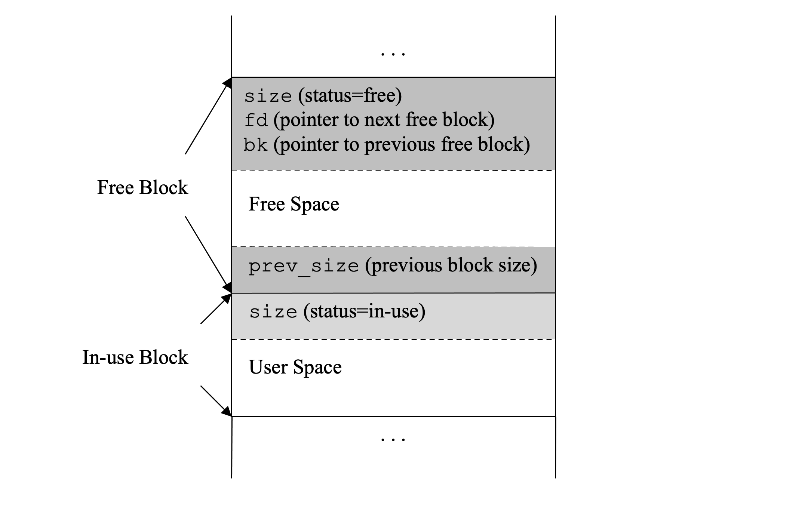
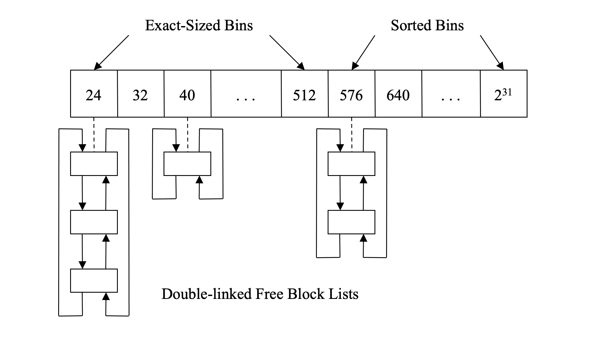

更新
2024-07-05
本书已经出版
由于本库的草稿是我之前一个人写的，所以质量和正确性都不如经过两位作者和出版社编辑审阅和校正过的书稿。
如果你想阅读更加完善的版本，推荐购买正版书籍。
ptmalloc
Ptmalloc是在Doug Lee的内存分配器上面包了一层并发分配的增强。它是Linux Red Hat发行版和许多其他的系统默认内存管理器。在性能和空间节约角度，在最好的内存管理器中，广受好评。下面的讨论适用于Ptmalloc 2.7.0.
Ptmalloc有两个关键的数据结构来管理堆内存块：边界标签和盒子。它们被声明在文件malloc/malloc.c，可以在GNU C运行库glibc里面找到。
一个边界标签是一个小的数据结构，在Ptmalloc里叫做malloc_chunk，每一个内存块里都有，用来记录当前块的大小和状态。因此，在Ptmalloc术语里面，一个chunk是一个块的别名。
XT:chunk和block的中文翻译均为“块”，在可能混淆的时候，chunk就不翻译。
struct malloc_chunk {
INTERNAL_SIZE_T prev_size; /* Size of previous chunk (if free) */
INTERNAL_SIZE_T size; /* Size in bytes, including overhead */
struct malloc_chunk* fd; /* double links -- used only if free */
struct malloc_chunk* bk;
};
图2灰色框框的是边界标签。大小字段放在内存块的开始位置，它的最低两个比特表面当前块和前一个内存块是空闲还是使用中。一个使用中的块标签只使用了大小字段，但是一个空闲的内存块标签使用了结构体malloc_chunk所有的四个字段。prev-size是放置在空闲内存块末尾的另一个大小字段。目的是为了让内存管理器可以合并空闲块。当一个内存块被释放时，Ptmalloc检查编码在大小字段的状态比特。

如果前一个内存块是空闲的，它的开始地址会通过prev_size 字段来计算，因此这两个内存块可以合并到成一个空闲的块。在size字段之后，是两个指针fd和bk指向其他空闲块的标签。Ptmalloc会使用他们来构建一个空闲块的双链表。当一个应用程序请求一个新的内存块，这个链表会被搜索来找到合适的候选块。因为标签数据结构，一个Ptmalloc管理的内存块的最小大小不会小于结构体malloc_chunk的大小，32字节对于64位应用程序。
但是一个被分配的内存块的消耗仅仅有8个字节，也就是size字段使用的空间。不同于空闲块，使用中的块不需要双链表的下一个和前一个指针。它同样把块末尾的prev-size给吃掉了，因为当它在使用的时候，我们不需要合并这个块。
所有的空闲块被收集到盒子里，这些盒子是一个存储了双链表且使用块的大小索引的数组。这个数组被声明为Ptmalloc管理堆的顶层元数据结构体malloc_state的一个数据成员。
typedef struct malloc_chunk* mchunkptr;
#define NBINS 96
struct malloc_state {
...
mchunkptr bins[NBINS * 2];
...
};
盒子集合空闲块的大小随着数据索引的增大而增大。盒子之间的间隔是仔细选择过的。因为大部分用户请求都是小块的，从24字节到512字节的盒子都是准确的大小，以8字节隔开。这些盒子被叫做小盒子。
剩下的盒子是大小的对数间隔。如果准确的匹配找不到，这些盒子可以分割开用来满足用户的请求。图2-2显示了24字节的盒子有三个空闲块，40字节大小的盒子有一个，576字节大小的盒子有两个，大小在512字节和576字节之间。盒子的空闲块大小大于512字节的被按大小排好序用做最好匹配分配。

当一个用户请求来了，块的大小会被检查，如果有必要，取整到不小于最小的块大小（64位程序是32个字节），另外可能会为了满足对齐要求作一些填充。如果调整过的大小符合准确大小的小盒子，那么对应的数组索引会被计算得到，接着会检查对应的空闲链表。
如果链表具有空闲块，那么头部空闲块会从链表移除和返回给用户。因为链表所有的空闲块都是同样的大小，所以没有必要遍历链表。如果链表是空的，下一个比较大的缓存着的盒子会被检查。如果有一个大于请求的大小的空闲块，那么它会被分割成两部分。一部分满足请求和返回给用户。另外一部分，叫剩余块，会放到对应的盒子，给将来使用。
如果在接下来的盒子没有空闲块，搜索会继续更大的大小的盒子，直到合适的空闲块被找到。如果所有的盒子被用光了和没有可以满足申请大小的候选内存块，Ptmalloc会转向系统的VMM来获取一大块内存，分割成两个内存块。一个返回给用户，一个被存入相应的盒子里。
当一个内存块被用户释放，它的大小从镶嵌的块标签获取。如果当前内存块前面和后面也是空闲的，Ptmalloc会试图合并他们，此时前一个和后一个空闲块会从他们相应的双链表中移除。合并后的空闲块会被放到下面描述的没有排好序的链表列表中。
除了上面描述的算法，Ptmalloc采用了其他一些有趣的技术来提高性能和减少内存消耗。如果感兴趣，鼓励读者通过阅读源代码来获得更多的细节
-
快速盒子（fast bins)与小盒子（small bins)相似；除了留在快速盒子的空闲块的最大大小更小，默认值是80字节。如果一个用户释放的内存块的大小小于快速盒子的最大内存块的大小，它会被直接放入对应的快速盒子里，且不更改它的标签。即使可以合并，它不会跟周围的空闲块合并。当一个新的请求到来时，在检查常规的盒子前，会先检查快速盒子。如果找到合适的，这个缓存的内存块会立即返回。同样的它的标签不需要被调整。在这种情况下，请求可以尽可能快地被满足。这个算法与经常需要构建和析构小对象的C++程序工作得很好。快速盒子的空闲块在一些条件下会被合并，为了避免碎片化。如果一个请求大于小盒子的最大的块大小或者没有空闲的块可以满足小的请求，在快速盒子的内存块会被处理，也就是合并和放到常规的盒子里。
-
另外还有一种特殊的盒子叫未排序chunks，因为在这种盒子的内存块是未排序的。这个盒子包含了暂时的最近内存分割带来的剩余部分和用户释放的空闲块。如果快速盒子和小盒子不能够满足一个请求，那么在未排序的chunks的空闲块会一个一个地考虑。如果一个匹配被找到，这个块会被返回给用户。否则，它会被放入常规盒子里。当空闲块被搜索遍历完，它们所有会重新分配到合适的盒子里。这种对最近空闲块的处理会提高内存局部性和性能，因为剩余部分比常规盒子的内存块优先考虑。
-
如果用户请求的大小超出了一个可调整的阈值，默认是128KB和Ptmalloc不能够找到一个够大的缓存的内存块来满足这个请求，它会从VMM分配一块匿名的mamped (mmap)内存并返回它给用户。同时当这样的内存块被用户释放，Ptmalloc不会缓存它来节省系统的内存，而是直接返回给VMM。这样子，进程的内存足迹在跑了很长时间后，还可以保持低。
XT：我之前也写了一篇关于Ptmalloc的简单介绍，可以结合着看https://zhuanlan.zhihu.com/p/534003664
XT：内存一般有申请和释放两个操作，如果有背景线程，那么会有三个操作。通常会将一些工作放在这些操作里面（顺便把工作做了），类似于摊还。比如ptmalloc在没有fast bins和small bins找到内存会去unsorted bins里面找，而没有匹配的空闲块会被”顺便"放入常规盒子里。